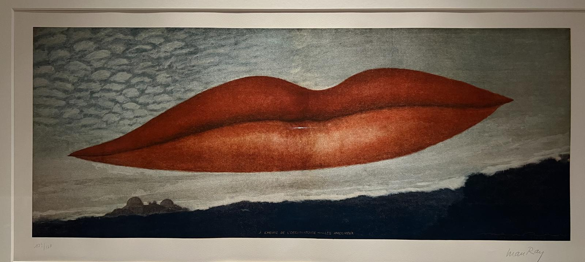
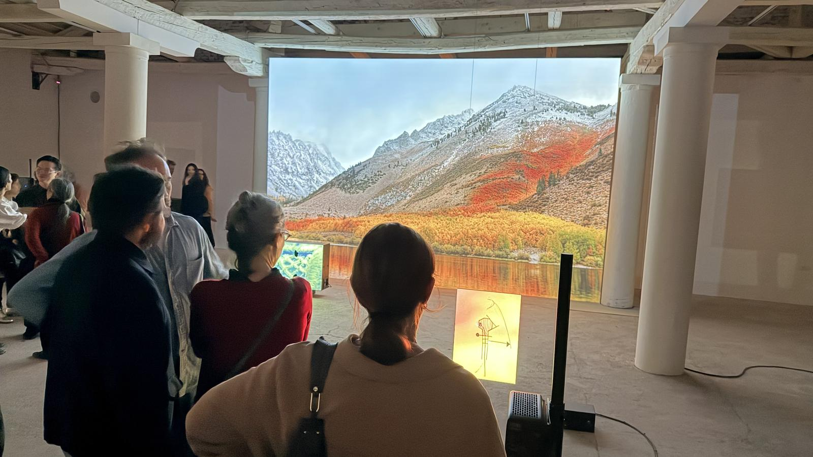
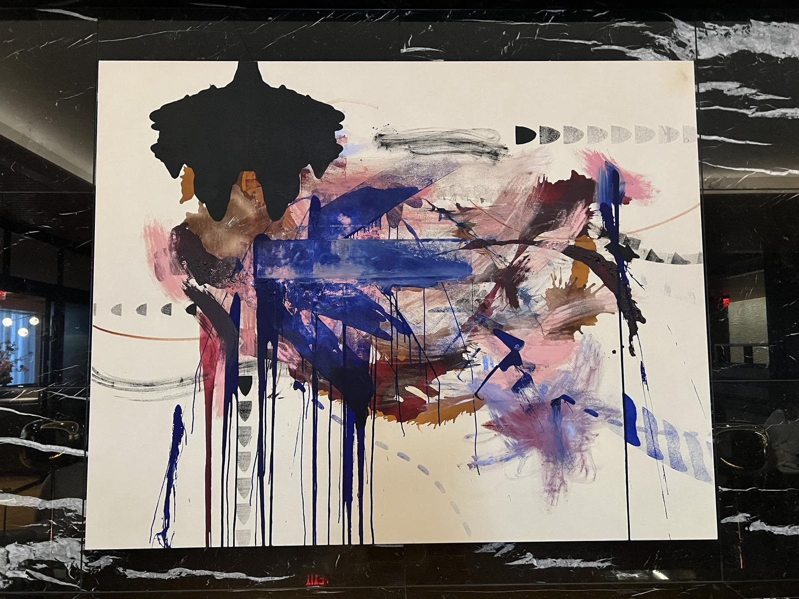
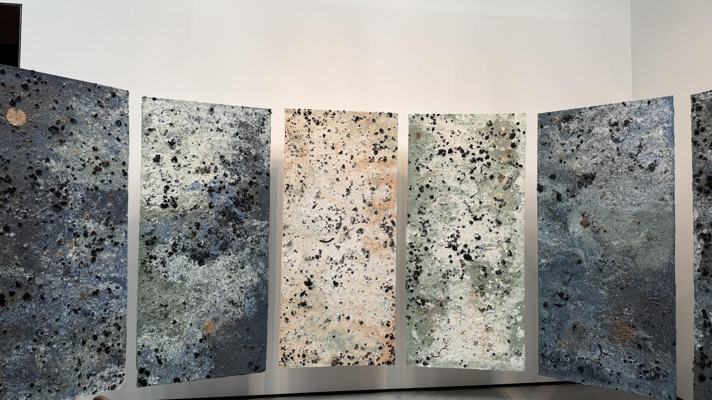
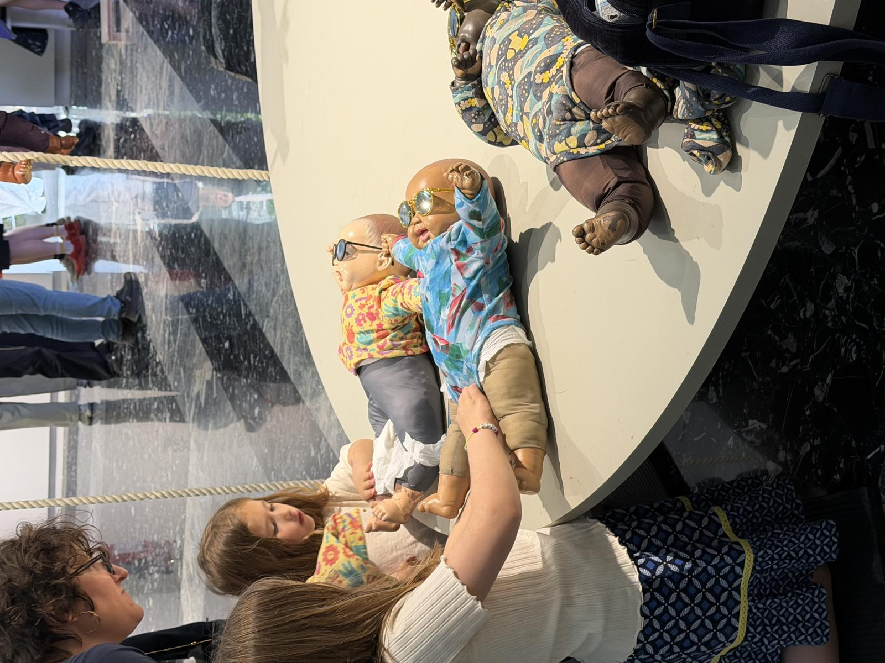
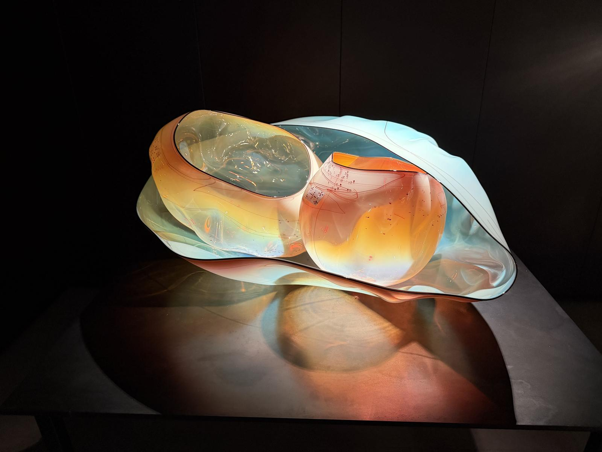
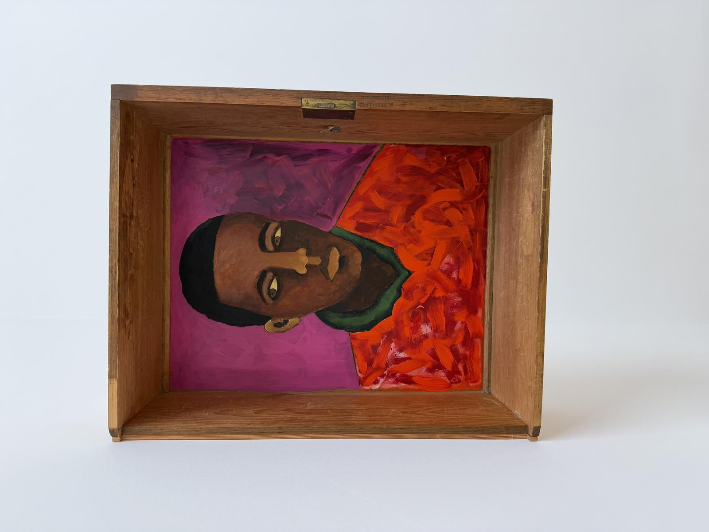
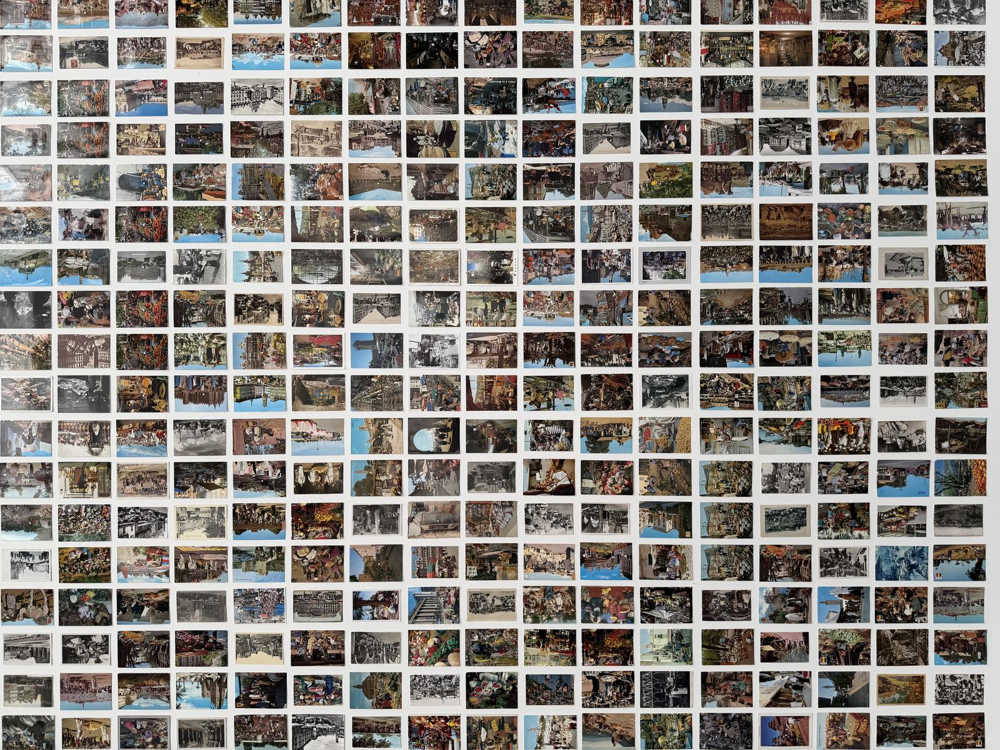

Artists are hard to find. A portfolio site is discoverable only if someone already knows your name. Galleries showcase their own roster. The platforms that exist are marketplaces first — discovery is a byproduct of selling, not a goal.
The information that would make discovery possible — who made what, where it has been shown, which collections hold it — is scattered across museum databases, gallery spreadsheets, and CV PDFs. No one has assembled it into a single, navigable, artist-controlled directory.
We are building one. A cooperative, not a platform. A searchable map of creative production across disciplines — visual art, music, film, architecture, performance — built and governed by the artists themselves.
— Katie Dixon & Okwui Okpokwasili, 2026
Arts, architecture, urban planning. Socrates Sculpture Park, Powerhouse Arts, BAM, NYC Dept. of Cultural Affairs. BA Yale, MA Columbia.
Performer, choreographer, writer. Bessie Award–winning Bronx Gothic. 2018 MacArthur Fellow. BA Yale.
Neuroscientist, Champalimaud Foundation. Open-source museum data and identifier resolution.